Brouilly 2007
Deuxième édition du festival de Gaby. Le vendredi, jour rouge sur les routes du sud, je suis donc parti jeudi soir par l'autoroute, j'ai dormi près d'Avallon et fait ensuite du tourisme à travers le Morvan, région splendide que je vous recommande !

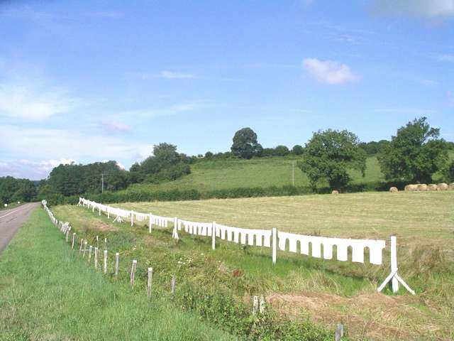
En chemin, je rencontre cette corde à linge, je m'arrête, en fait c'est une oeuvre d'art d'Agri-Culture...

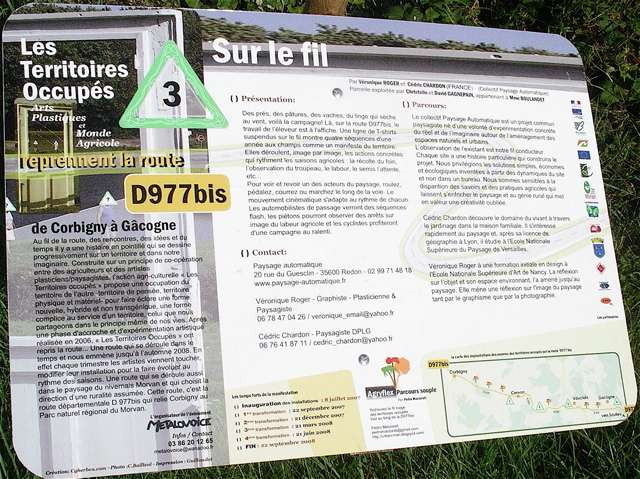
Ils expliquent leur concept et leurs réalisations, ça devrait intéresser Didier, Patrick et Bruno après l'Orgue de Sancy...

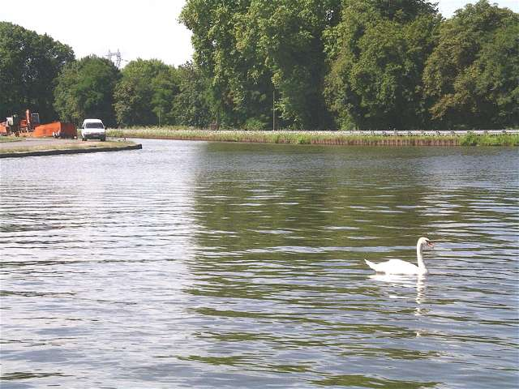
J'ai déjeuné sur le Canal du Centre, au bord d'un élargissement qui permet le stationnement des bateaux. Un cygne tourne en rond au milieu, attendant les painpains jetés par les touristes bateliers...

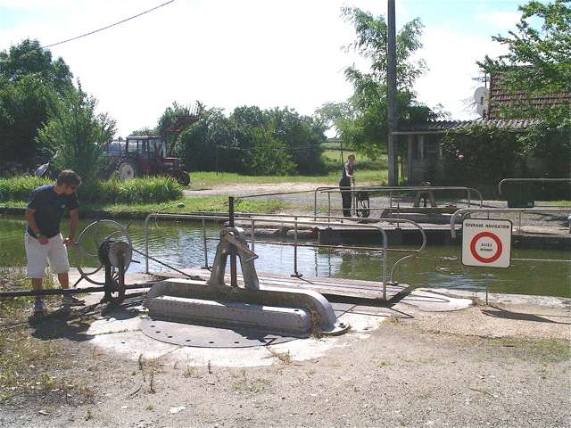
Au bout, une écluse à l'ancienne, fonctionnant tout à bras, avec son éclusier et son éclusière. C'est qu'il s'agit de passer la colline...

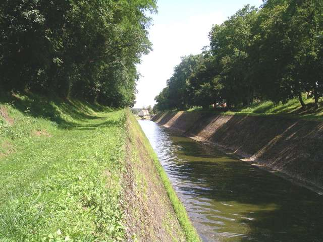
La colline en question n'est d'ailleurs pas bien haute, et le canal peut continuer dans une simple cavée !

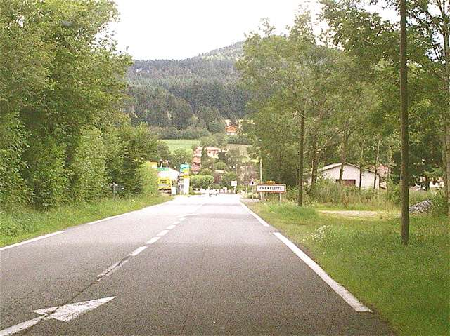
Peu avant d'arriver, je traverse le bourg de résidence d'une célébrité locale...

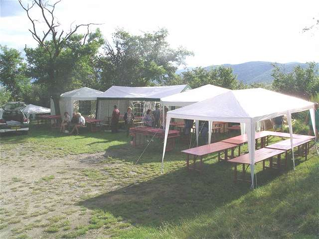
J'arrive, il reste quelques barnums à monter, Gaby a encore fait des acquisitions. Ils ne serviront pas tous, heureusement, c'est surtout pour le cas où il pleuvrait, mais le cas ne se présentera pas...

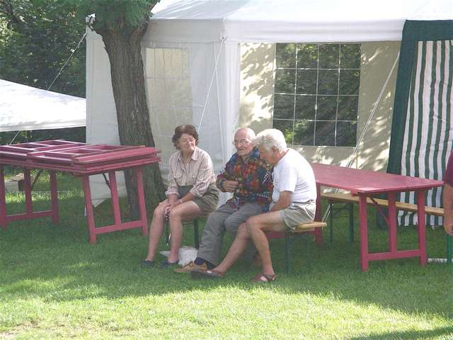
Je ne suis pas le seul à arriver le vendredi, les Arus et Jean-Claude (et Josette) sont déjà là...

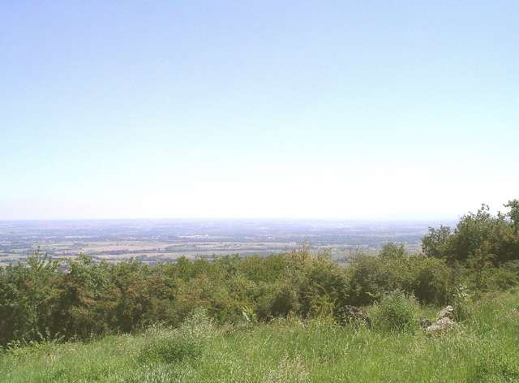
Magnifique, le site, il domine toute la vallée de la Saône. Il paraît que quand la visi est bonne, on voit le Mont Blanc !

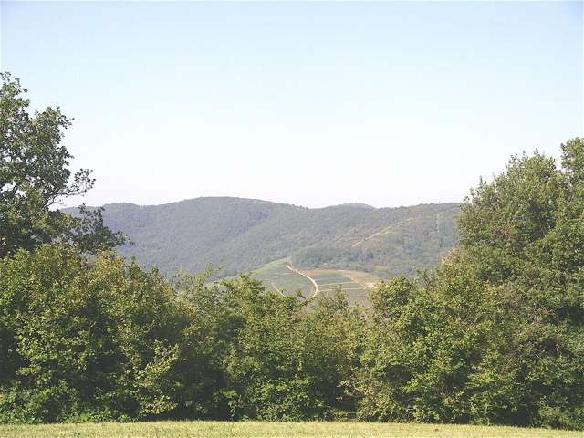
A l'Ouest, encore quelques vignes, mais on atteint rapidement le Morvan-sud.

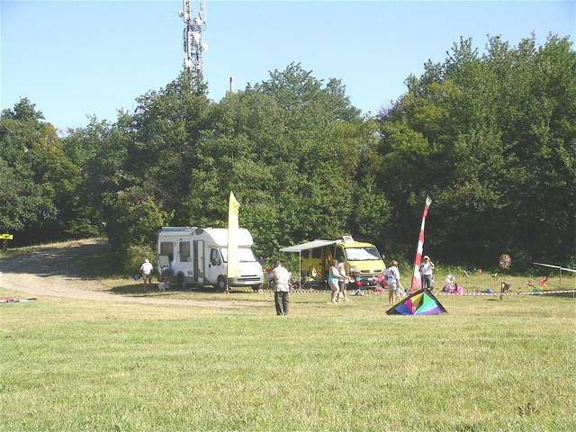
En haut de la colline, au-delà de la chapelle, une sorte de col est le plus grand spot où cervoler. Les campings-cars qui ne veulent pas monter sur le terrain au pied de l'antenne sont restés là... Les plus petits véhicules sont garés derrière la chapelle.

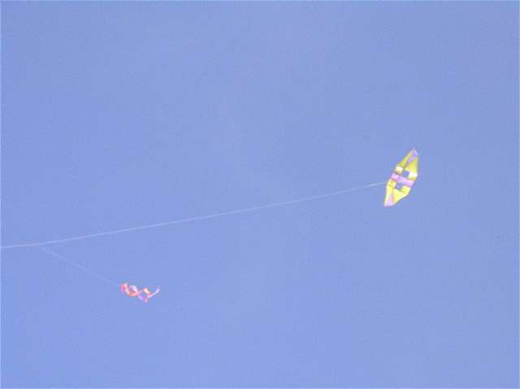
Mais on peut aussi voler devant la chapelle, face à la plaine, si on accepte quelques risques ! William a monté son Genki modifié.

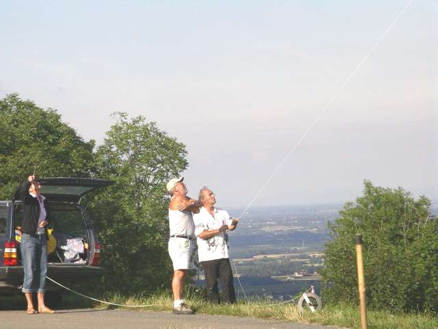
Claude tâte les qualités de la bête. Il assemblera aussi son nouvel oiseau bleu, mais ne volera pas. Il est splendide, j'ai hâte de le voir en l'air...

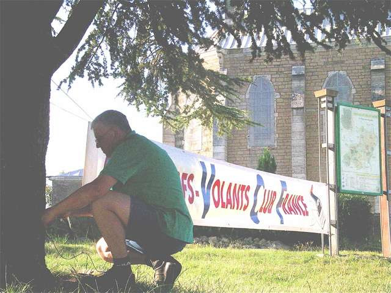
Tout le monde s'entraide, la preuve, c'est Bernard le Chef Suisse qui monte les bannières du CVCF que Gaby a fait réaliser...

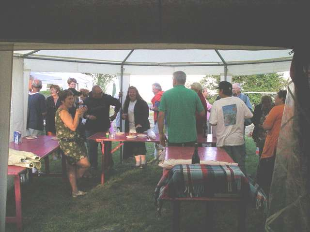
Le festival n'est pas encore commencé, mais ça n'empêche pas de faire un petit pot et de dîner ensemble, grâce à la générosité de l'organisation, merci...

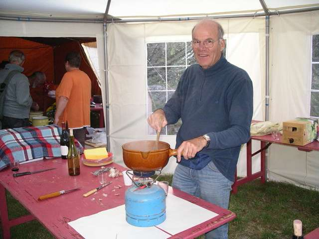
Au menu, Cancoillotte. Contrairement à la Franche-Comté où c'est un fromage (quasiment liquide et odorant, c'est vrai...), ici, il s'agit d'une préparation où le fromage se marie au vin blanc et à l'ail, et il faut que ça file !

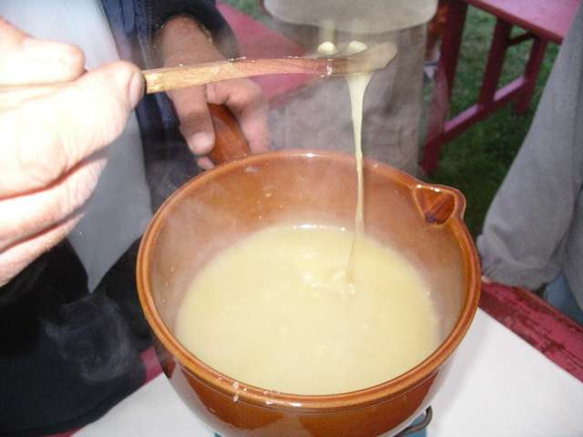
Ca commence à filer, ce n'est pas mal, mais il reste encore des gousses d'ail intactes...

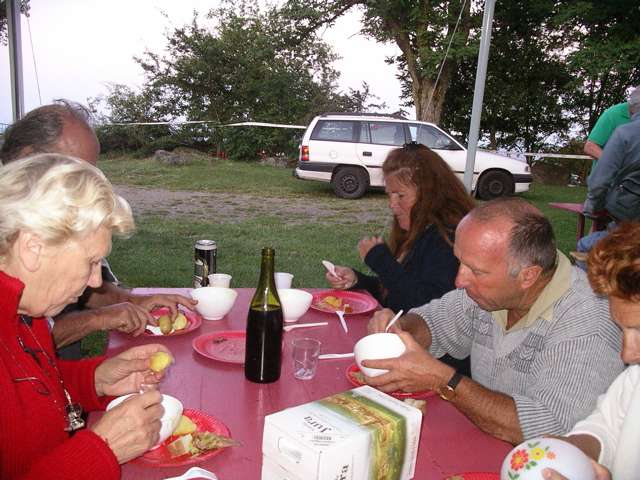
La dégustation se fait en mêlant cervolistes et vignerons. Chacun a sa patate et son bol de cancoillotte ()...

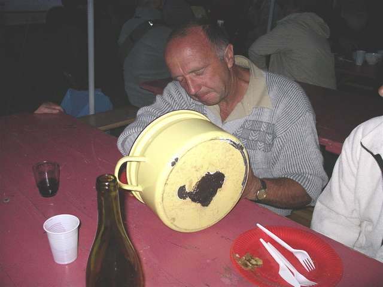
Ca a l'air sacré pour les vignerons, il n'en laissera pas une bavure, et quelle concentration !

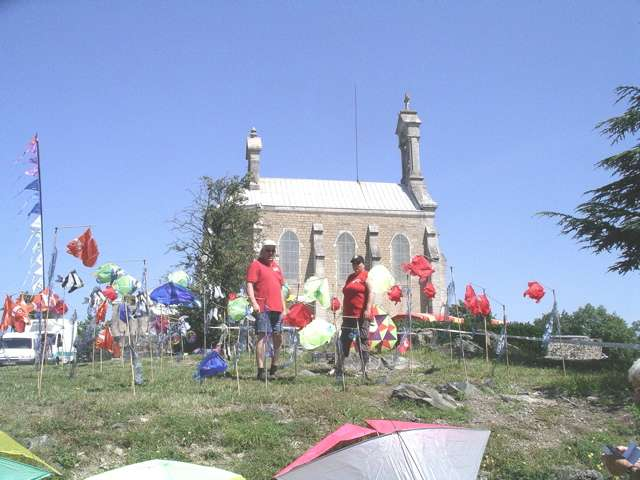
La Suisse a monté sur la pente son banc de poissons, de plus en plus riche...

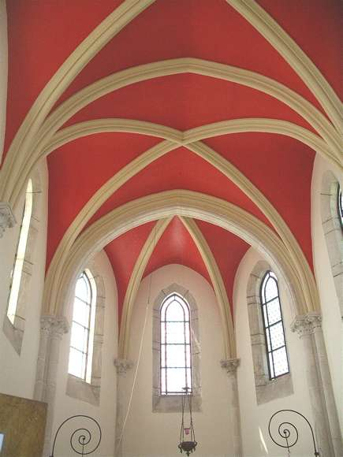
L'intérieur de la chapelle est simple mais beau, avec ses originales voûtes peintes d'un riche rouge...

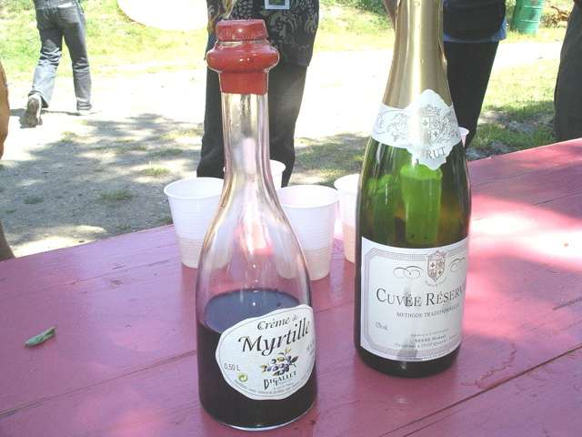
Avant le déjeuner, un petit kir à base de productions du pays, pour rappeler que le Beaujolais produit aussi du blanc (mais moins que de rouge...). !

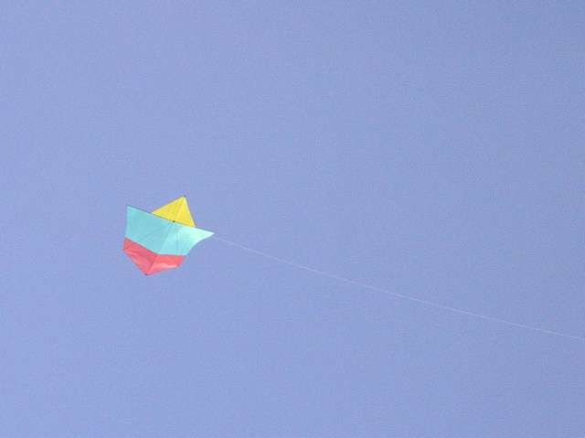
L'après-midi, François peut faire voler son grand Jessica personnel, allongé, sans gréement ni haubans ni bridage, juste une ficelle au croisement des armatures. Et il vole bien. L'absence d'une bride arrière se fait seulement sentir pour les décollages par vent faible, où le CV ne monte guère quand on tire...

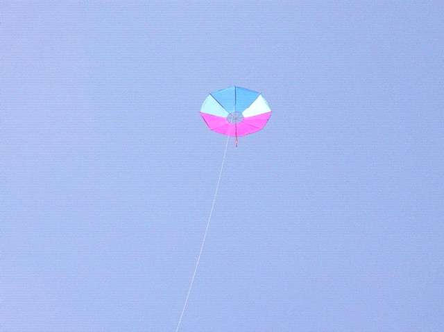
La Suisse a mis en l'air ce grand dérivé de parapluie, retourné, sans manche, mais avec trou et quille. Bon vol. Il servira aussi avec une lampe, pour le vol de nuit des volontaires, ceux qui acceptent de courir...

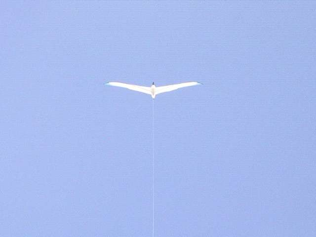
J'ai ressorti mon Albatros1, plus léger, pour ce petit vent. On alterne les thermiques de l'ensoleillement sur le flanc du Mont (avec des CVs qui montent à la verticale !) avec des rabattants derrière la crête (où les cerfs-volants redescendent à vitesse V), et il faut se battre pour rester en l'air !

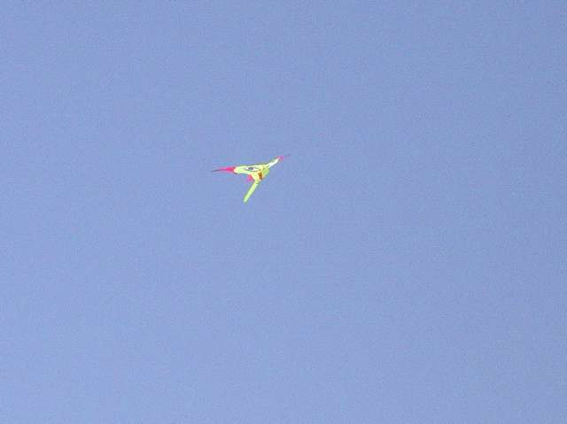
Jean-Claude fait voler son En'Air-vent, qui ne supporte pas les vents forts, mais à son aise ici...

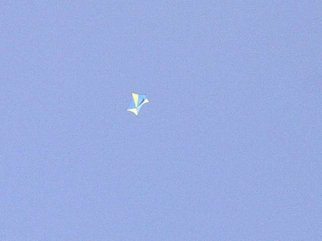
Et un Pentagone survolera longtemps la colline, très haut...

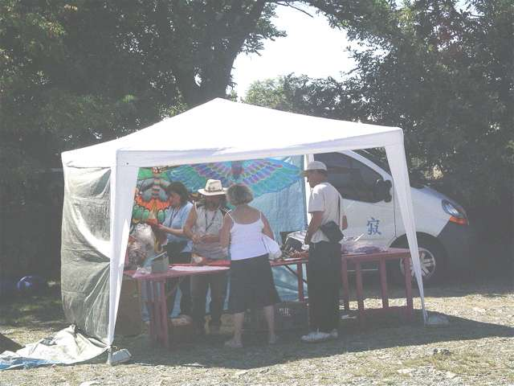
Marc et Françoise sont venus de Bourges avec leurs cerfs-volants balinais et ont monté boutique au bord de la route...

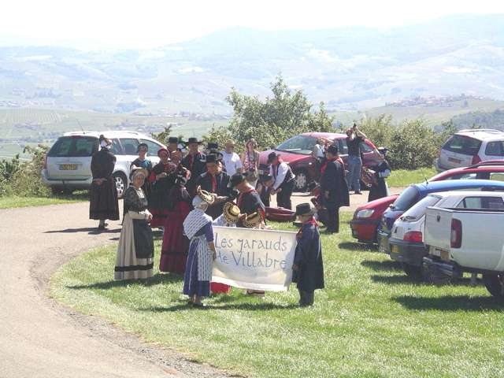
En milieu de journée débarquent les Jarvaux de Villarbe (les Maladroits de Villebret, en patois local...) qui danseront bourrées, polkas, mazurkas devant la chapelle malgré le terrain peu favorable !

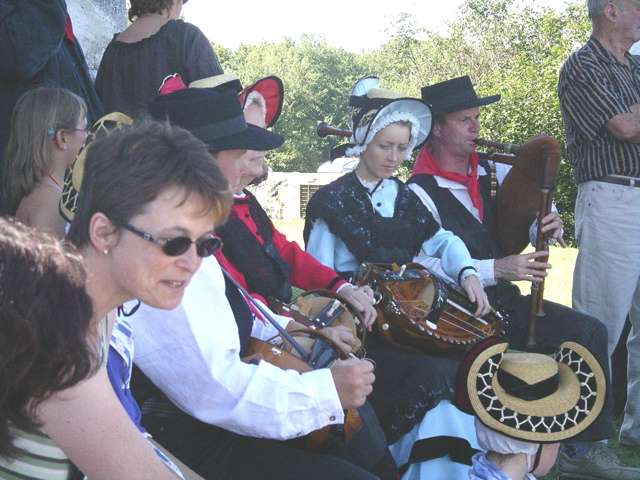
Leur orchestre comprend trois vielles et une cornemuse locale...

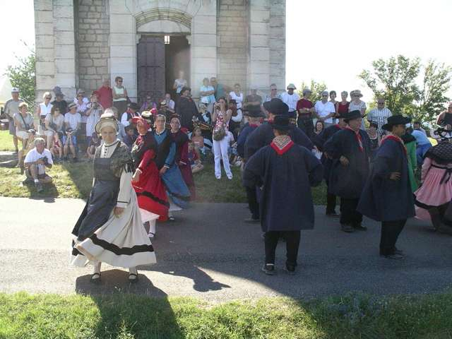
Danse à l'ombre, car les costumes ne sont pas faits pour la canicule, et les danseurs ne s'économisent pas !

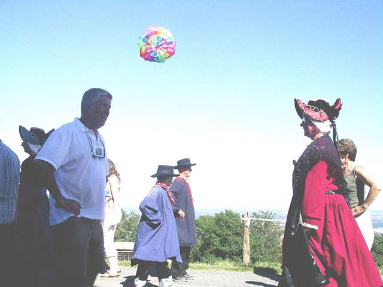
Ils invitent aussi des volontaires à danser avec eux, les pas ne sont pas si simples, j'ai essayé. Jean-Pierre fait aussi de son mieux, avec le sourire de part et d'autre...

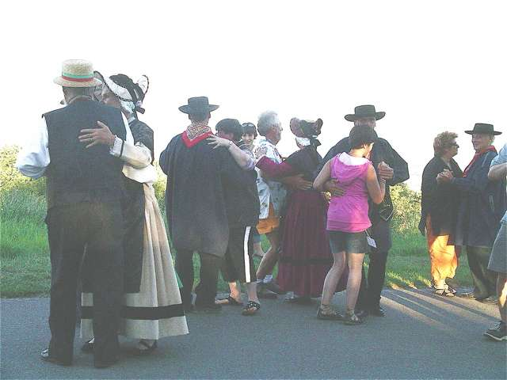
William entre aussi dans la danse pour une mazurka endiablée....

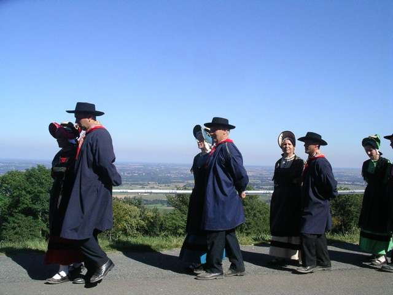
Pour finir, danse-promenade devant le splendide panorama ensoleillé !

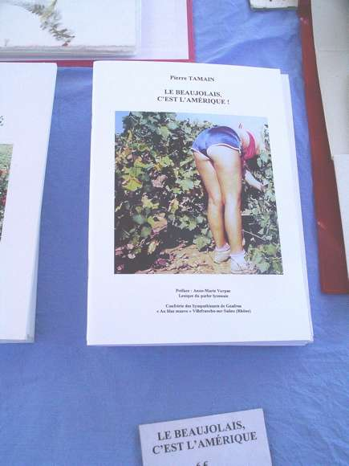
Les vignerons ont aussi monté une dégustation-buvette-restauration. Ils avoisinent le stand d'auteurs locaux (plutôt proches de l'esprit de Choron...) de livres et de BDs sur la région et ses pratiques, expliquant par exemple le travail des vendangeurs !

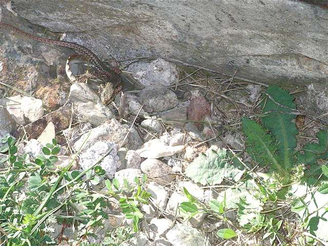
Il fait très chaud, et les lézards sortent de tous les trous de mur, comme les guêpes d'ailleurs, qui feront quelques victimes malgré l'intervention des pompiers...

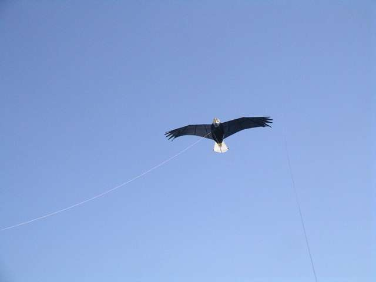
Le dimanche midi, le vent tombe complètement, et il fait vraiment très chaud. La Suisse sortira encore un très bel aigle en 3 D qui ne volera malheureusement qu'aussi longtemps qu'on tirera sur la ficelle...

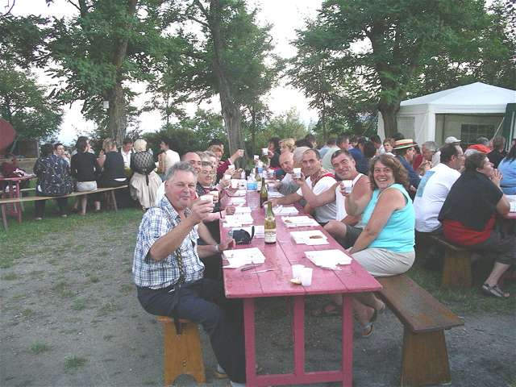
Pas de vent, alors le repas durera longtemps. Le déjeuner est commun avec les vignerons, qui ne sont pas les derniers à festoyer...

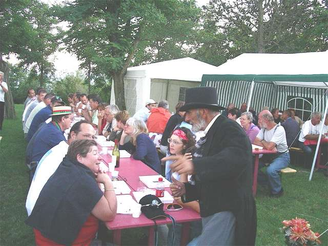
Les cervolistes de leur côté ne se laissent pas abattre, et Gaby s'est mis sur son trente-et-un pour prodiguer les encouragements !

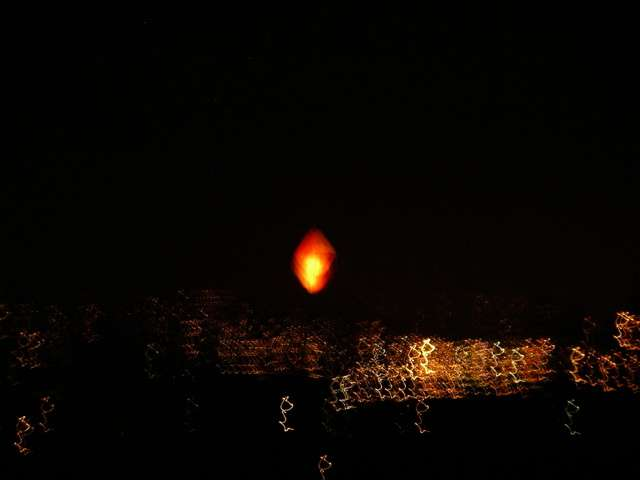
La nuit arrive, quelques fanas essayent de voler dans rien de vent. J'arrive à mettre mon Harfang en l'air, mais je veux faire le malin au-dessus des dîneurs tardifs et mon CV se prend dans un arbre. Bon, on verra demain... La Suisse fait voler son parapluie comme je l'ai dit, en courant sur la route. Essais de montgolfières, mais il fait chaud, l'une ne décolle pas et finit par brûler, une autre décolle un peu et finit dans la pente plus bas... Enfin une réussite à plus grand volume monte indéfiniment, jusqu'à se perdre de vue, bravo !

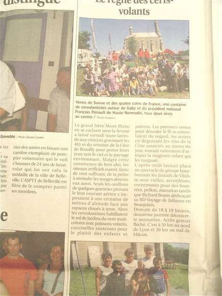
Quand je me suis levé dimanche matin, mon Harfang était là, posé à côté du camion, François et Claude s'en étaient occupés, le soulevant avec le Jessica. Merci à eux. Dans le journal du matin, arrivé avec les croissants de Gaby, un bel article mentionnait d'ailleurs François, Président National de Haute Normandie et faisait référence aux jardins du xxx (il a le droit, lui ?)...

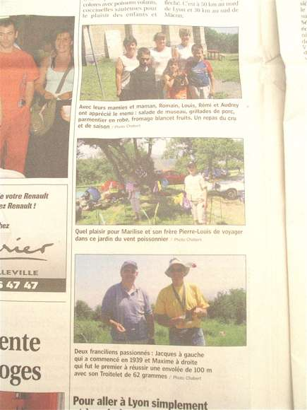
Il montrait aussi Mr Orsenigo et moi, mais traitait ma Raie Manta de Troitelet, je ne sais pas d'où il avait sorti ça. Sinon, bon article, merci...

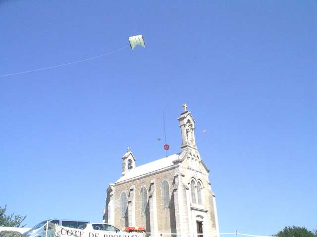
François a mis aussi en l'air le flow-form de l'Antenne de Beauce du CVCF. Mais dès qu'il a confié la ficelle à quelqu'un pour aller sauver sa Jessica en péril, le flow-form s'est retrouvé dans un arbre épineux... Un peu de couture à faire...

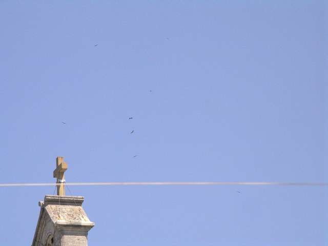
Le dimanche, vent nul et chaleur accablante, quelques thermiques, mais pratiquement pas de cerfs-volants en l'air... Je suis d'ailleurs parti tôt (oui, pour faire mon reportage avant de partir dans les Alpes, j'avais peur que vous ne manquiez de lecture), je ne saurai pas la fin, mais il a fait chaud sur l'autoroute, ça, je peux vous le dire...
Brouilly : un festival où on s'amuse bien, avec plein de copains. Le vol est toujours un problème : trop de vent, pas assez, les surfaces sont moyennement propices aux conditions difficiles qu'on rencontre sur le Mont. Mais Gaby se démène comme un beau diable, avec son équipe, pour que l'accueil soit toujours bel et bon...